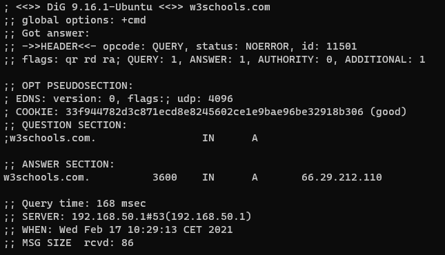
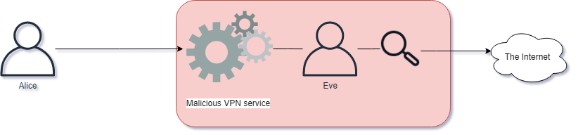

Кибербезопасность. Глубокий сетевой уровень
IP - Интернет протокол
IP используется для связи между сетями, не только по физическим каналам, но и между сетями маршрутизаторов. Используемая схема адресации - IPv4 ("IP версия 4") или IPv6 ("IP версия 6").
IP-сети можно разбить на разные части, часто называемые подсетями. Это достигается путем добавления дополнительной информации вместе с IP-адресом, называемой сетевой маской. Сетевая маска определяет размер сети и какой пакет маршрутизируется внутри сети, а какой - за пределы сети.
Маски сети могут быть представлены десятичными числами или знаком косой черты. При использовании обозначения косой черты косая черта следует за IP-адресом системы. Её примеры:
| IP адрес | Обозначение косой черты | Маска сети |
| 10.0.0.1 | /8 - Пример: 10.0.0.1/8 | 255.0.0.0 |
| 172.16.1.1 | /12 - Пример: 172.16.1.1/12 | 255.240.0.0 |
| 192.168.0.1 | /16 - Пример: 192.168.0.1/16 | 255.255.0.0 |
| 192.168.0.1 | /24 - Пример: 192.168.0.1/24 | 255.255.255.0 |
Некоторые IP-сети зарезервированы только для определенного типа трафика. IP-адреса в таблице выше зарезервированы только для внутреннего использования в организации, то есть они не должны маршрутизироваться в Интернете. Эти типы IP-адресов обычно называются адресами RFC1918.
Разные сети
Давайте посмотрим на различные сети в RFC1918 и на то, насколько велики эти сети:
- 10.0.0.0/8 - Более 16 миллионов IP-адресов
- 172.16.0.0/12 - Около 1 миллиона IP-адресов
- 192.168.0.0/16 - 65534 IP-адресов
Сегменты IP могут быть далее разбиты на более мелкие и детализированные сети.
В каждой сети есть зарезервированный адрес для широковещательной передачи трафика каждому узлу в сети, который называется широковещательным адресом. Широковещательная передача данных означает отправку данных всем в сети, а не только одному узлу. Существует множество приложений и протоколов, которые для своей работы полагаются на широковещательный трафик.
Для каждого сегмента сети широковещательная рассылка всегда выполняется с последнего IP-адреса в сети. Например, в сети 192.168.0.0/24 широковещательный адрес 192.168.0.255.
Наименьшая возможная сетевая маска - 255.255.255.255, представленная как /32. В этой сети только один IP-адрес.
Если трафик необходимо отправлять обратно на хост, например для связи между приложениями, он отправляется на адрес localhost. Этот адрес всегда 127.0.0.1 и относится к сети /8.
В IP-сетях трафик маршрутизируется маршрутизатором. Маршрутизатор - это сетевое устройство, которое понимает формат IP и может пересылать пакеты между сетями. Это отличается от коммутатора, поскольку коммутатор пересылает данные внутри сети, а маршрутизатор пересылает данные между сетями.

Packets on the network has headers which describe many of the important details we already discussed within the IP protocol. IPv4 Header looks like this:

Кредиты на изображения: Мишель Бакни - Постель, Дж. (Сентябрь 1981 г.) RFC 791, Интернет-протокол, Спецификация протокола Интернет-программы DARPA, Интернет-сообщество, p. 11 DOI: 10.17487/RFC0791., CC BY-SA 4.0, https://commons.wikimedia.org/w/index.html?curid=79949694
Исходный адрес - это IP-адрес системы, отправляющей пакет, а пункт назначения - это адрес, которому пакет предназначен. В заголовке есть и другие поля, которые используются многими функциями протокола IP, но выходят за рамки этого вводного класса.
Вы можете проверить свой IP-адрес в Windows, запустив команду ipconfig в окне командной строки. В Linux это делается с помощью команды ip addr show или ifconfig.
Когда компьютеру необходимо связаться с чем-то, чего нельзя найти в локальной сети, он отправляет трафик на шлюз по умолчанию в соответствии с настройкой системы. Шлюз по умолчанию - это маршрутизатор, который может перенаправлять трафик на IP-адрес назначения.
NAT ("Network Address Translation" - "Трансляция сетевых адресов")
NAT позволяет системе, принимающей соединения на общедоступном IP-адресе, отображать эти запросы на внутренний IP-адрес RFC 1918 или наоборот. Системы, которые выполняют NAT, обычно представляют собой межсетевые экраны и маршрутизаторы.
Типичная реализация NAT - это когда внешний IP-адрес используется как фасад для нескольких внутренних IP-адресов, а номер порта назначения используется для решения, на какой сервер следует отправлять данные. Это позволяет внутренним IP-адресам получать трафик от внешних систем.
Другой очень распространенной реализацией является разрешение внутренних IP-адресов для доступа в Интернет с помощью внешнего IP-адреса. NAT отслеживает соединения с внутренних адресов на адреса назначения и перенаправляет трафик через соединения.
NAT можно настроить разными способами, но в этом классе мы не будем вдаваться в подробности метода.
IPv6 - IP версия 6
IP версии 6 - это последний стандарт IP, который был разработан для поддержки большего количества IP-адресов. Вместо использования 32-битной адресации для IP-адресов используется 128-битная адресация. Это позволяет использовать достаточно IP-адресов в обозримом будущем, пока IPv4 уже закончился.
Адреса IPv6 используют 8 групп по 4 шестнадцатеричных числа. Адрес IPv6 выглядит так: 2a00:1450:400f:80a::200e:. Обратите внимание, что в нем нет 8 групп по 4 шестнадцатеричных числа. Это связано с тем, что адреса IPv6 можно сократить с помощью простых правил:
- Ведущие нули можно сократить
- Двойное двоеточие (::) может использоваться для представления непрерывной строки из нулей.
Расширенный адрес IPv6: 2a00:1450:400f:080a:0000:0000:0000:200e.
Localhost можно сократить до ::1 и ::.
IPv6 имеет сети, то есть подсети, как и IPv4.
Заголовок IPv6 выглядит так:
Мы видим гораздо более простой заголовок с гораздо большим пространством для IP-адресации.
IPv6 используется все больше и больше, и во многих инструментах встроена поддержка этого протокола. Например, с помощью ping мы можем переключаться между IPv4 и IPv6 с флажком -4 и -6 соответственно.
Запустите ipconfig и посмотрите, видите ли вы какие-либо адреса IPv6. Если у вас включен IPv6, попробуйте ping -6 google.com и ping -4 google.com. Посмотрите, как эта команда позволяет нам использовать IPv4 или IPv6?
ICMP
ICMP часто ассоциируется с Ping и Traceroute. ICMP можно использовать для других целей, например, для запроса времени в узла, что называется запросом отметки времени ICMP. Запрос ICMP Timestamp просто позволяет, например, Маршрутизатор попросить другой Маршрутизатор синхронизировать своё время, что является важным атрибутом сетевых коммуникаций.
Обычная тактика злоумышленников, чтобы проверить, доступны ли системы в сети, - это выполнить Ping Sweep. Цель такой активности - заставить целевое устройство в сетевом диапазоне отвечать на запросы ping, чтобы злоумышленник знал, что оно доступно. Такой подход наивен, так как многие системы по умолчанию блокируют входящие пинги.
Traceroute (Трассировка)
Tracerouting - это способ определить, какие маршрутизаторы участвуют в отправке пакета из системы A в B. Знание, какие маршрутизаторы принимают наши пакеты, может быть полезно как для лучшего понимания наших сетей, так и для понимания поверхности атаки. Маршрутизатор отвечает за маршрутизацию пакета в правильном направлении. Представьте себе поездку по дороге, где дорожные знаки на перекрестках направят вас к месту назначения. Эти знаки на перекрестках обозначают маршрутизаторы. Traceroute идентифицирует эти знаки и перекрестки и сообщает, как далеко они находятся, в миллисекундах (мс).
Заголовки IPv4 TTL и IPv6 Hop Limit имеют одинаковую функцию. Каждый маршрутизатор, который направляет пакет, будет уменьшать это значение на 1, и если значение достигает 0, маршрутизатор отбрасывает пакет и возвращает отправителю пакет ICMP Time Exceeded.
Чтобы выполнить трассировку в Windows:
tracert google.com
Для выполнения трассировки в Linux (не устанавливается по умолчанию):
traceroute google.com
Процесс трассировки с помощью этих инструментов прост:
- Операционная система отправляет пакет google.com, значение TTL установлено на 1.
- Пакет маршрутизируется в сети, и первый маршрутизатор уменьшает TTL на 1, оставляя его равным 0. В результате маршрутизатор отбрасывает пакет и отправляет сообщение «ICMP Time Exceeded» обратно источнику.
- Клиент увеличивает TTL на 1, позволяя маршрутизировать пакет через один дополнительный переход.
Этот процесс повторяется, увеличивая TTL на 1, пока место назначения не будет достигнуто.
DNS ("Domain Name System" - "Система доменных имён")
DNS используется для сопоставления приложений через имена с IP-адресами. Например, если вы хотите использовать свой браузер для посещения http://google.com, браузер должен сначала сделать запрос к DNS-серверу для разрешения IP-адреса для google.com
Системы обычно настраиваются с использованием первичного и вторичного серверов доменных имен. Эти параметры могут быть настроены вручную или предоставлены DHCP-сервером. Это позволяет нашим компьютерным системам подключаться к DNS-серверу, чтобы он мог решить эту проблему за нас.
Затем DNS-сервер отвечает за разрешение запроса. Затем он приступит к проверке своего собственного кеша, чтобы узнать, знает ли он ответ. Каждый ответ DNS можно кэшировать, который временно сохраняется для ускорения будущих запросов на определенный TTL ("Время жизни"). TTL обычно устанавливается на пару минут, например 10 минут.
Если DNS-сервер не имеет ответа в кэше, он перейдет к проверке того, кто отвечает за ответ. Это делается с помощью рекурсивного процесса, который включает запрос иерархической системы серверов имен, что неизбежно приведет к тому, что DNS-запрос попадет на полномочный сервер имен.
Вы можете попробовать выполнить поиск DNS в Windows или Linux прямо сейчас. В терминале командной строки в Windows введите nslookup w3schools.com или в Linux введите dig w3schools.com. Вы должны увидеть такой результат:

IP-адрес w3schools.com можно увидеть в ;; ANSWER SECTION. Когда был сделан снимок экрана, IP-адрес за именем w3schools.com был 66.29.212.110.
Авторитетный сервер имен - это DNS-сервер, который отвечает за окончательный ответ на вопрос. Например, на IP-адрес google.com ответит их авторитетный сервер имен, и мы можем увидеть этот сервер, запросив его:
Поиск авторитетного сервера имен в Windows:
nslookup -type=SOA google.com
Поиск авторитетного сервера имен в Linux:
dig -t SOA google.com
DHCP ("Dynamic Host Configuration Protocol" - "Протокол динамического конфигурирования сервера")
Как следует из названия, протокол DHCP позволяет любой системе в сети связаться с сервером и получить конфигурацию. Такая конфигурация обычно подразумевает получение IP-адреса и сетевого диапазона, шлюза по умолчанию и DNS-серверов.
DHCP позволяет легко управлять подключением клиентов к сети и выходом из неё.
Если вам интересно, используете ли вы DHCP прямо сейчас, вы можете ввести ipconfig / all в системе Windows и найти в выходных данных "DHCP включен: Да". Ваш компьютер может иметь несколько сетевых интерфейсов.
VPN ("Virtual Private Network" - "Виртуальная частная сеть")
VPN - это система, которая позволяет двум системам устанавливать зашифрованные формы для связи, обеспечивая шифрование сетевого трафика при передаче. Многие VPN представляют собой архитектуру клиент-сервер, что позволяет клиенту получать доступ к нескольким службам VPN. VPN, размещенная на вашем рабочем месте, также может предоставить доступ к ресурсам, которые иначе доступны только изнутри.

Некоторые службы VPN предназначены для обеспечения конфиденциальности пользователей и шифрования передаваемых данных. Эти службы позволяют пользователям отправлять сетевые данные через VPN, эффективно маскируя IP-адрес пользователей при навигации в Интернете.
Обычно рекомендуется использовать VPN для защиты сетевых подключений, однако мы не должны использовать какие-либо услуги VPN. Бесплатные VPN-сервисы иногда могут быть вредоносными, проверяя, считывая и храня ваши конфиденциальные данные.
